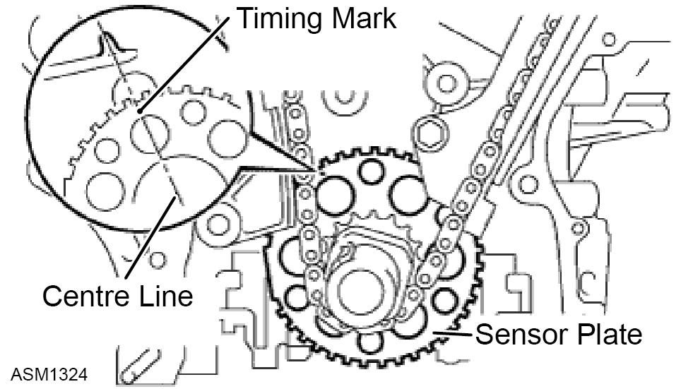
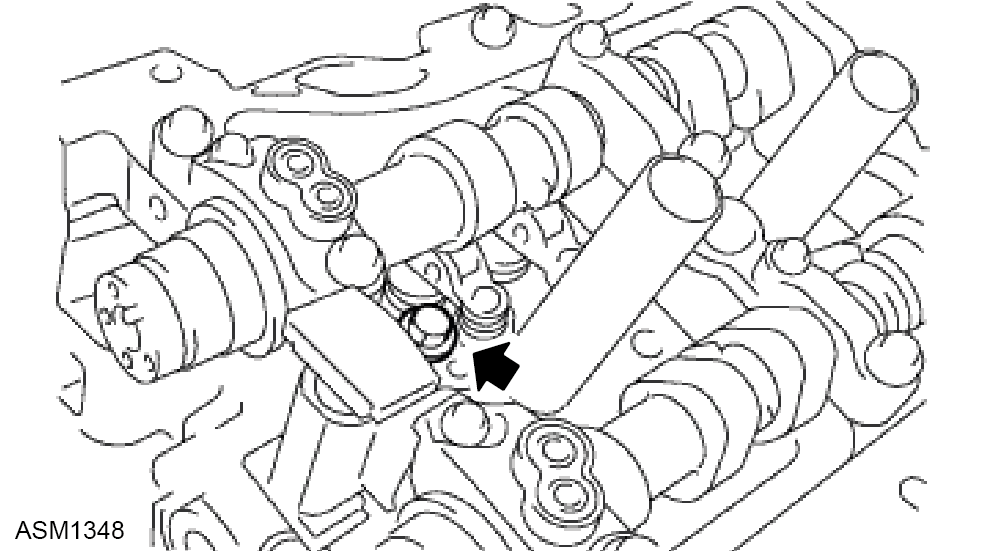
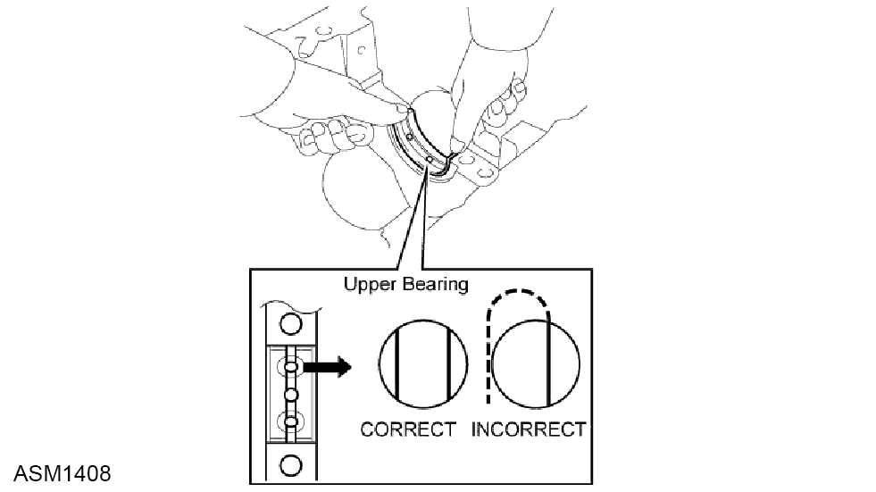
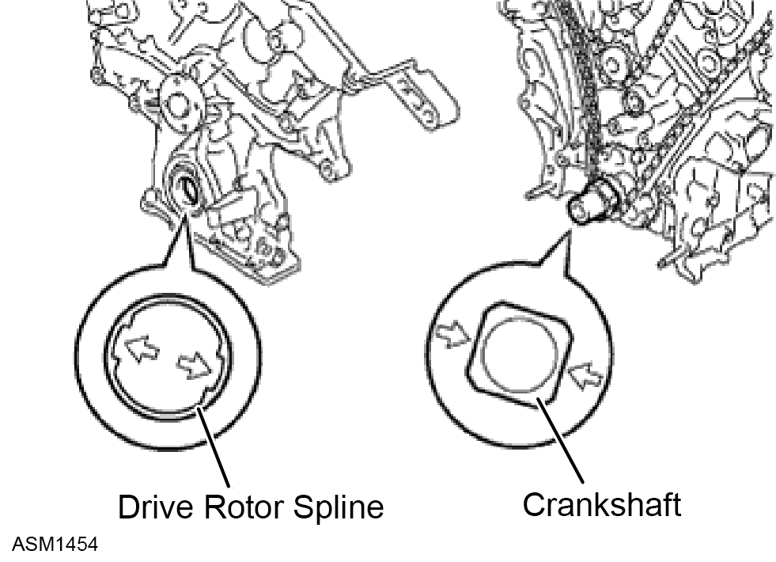
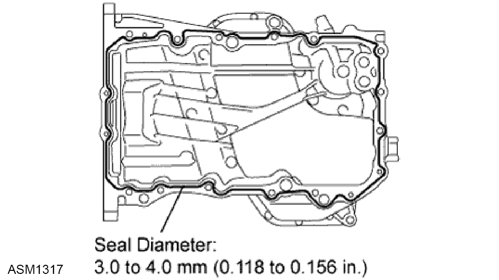
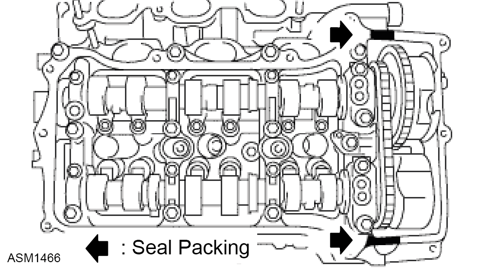
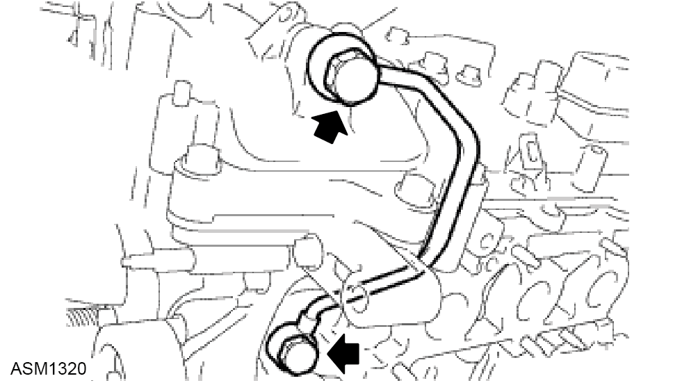

Short Engine - Block Assembly - V6
Print
Operation Code: 40.00.02-02
Removal
- Remove transmission assembly. Refer to procedure.
- Remove spark plugs left side. Refer to procedure.
- Remove spark plugs right side. Refer to procedure.
- Remove oil control valves. Refer to procedure.
- Remove camshaft position sensors. Refer to procedure.
- Remove knock sensors. Refer to procedure.
- Remove oil control valve pipe right side. Refer to procedure.
- Remove cam cover gasket right side. Refer to procedure.
- Remove cam cover gasket left side. Refer to procedure.
- Remove water pump assembly gasket. Refer to procedure.
- Remove upper oil sump gasket. Refer to procedure.
- Remove timing chain cover gasket. Refer to procedure.
- Remove water outlet. Refer to procedure.
- Remove supercharger. Refer to procedure.
- Remove alternator. Refer to procedure.
Set cylinder 1 timing to Top Dead Center
- Temporarily tighten the pulley set bolt.

- Set the timing mark on the crank angle sensor plate to the RH block bore centre line (TDC / compression).
- Check that the timing marks of the camshaft timing gears are aligned with the timing marks of the bearing cap as shown in the illustration. If not, turn the crankshaft 1 revolution (360°) and align the timing marks as above.
Remove no.1 timing Chain Tensioner Assembly
- Move the stopper plate upward to release the lock, and push the plunger deep into the tensioner.
- Move the stopper plate downward to set the lock, and insert a hexagon wrench into the stopper plate hole.
- Remove the 2 bolts and chain tensioner.
Remove Chain Tensioner Slipper
- Remove timing chain slipper.
Remove no.1 Timing chain Assembly
- Turn the crankshaft counterclockwise 10° to loosen the chain of the crankshaft timing gear.
- Remove the chain from the crankshaft timing gear and place it on the crankshaft.
- Turn the camshaft timing gear on the RH bank clockwise (approximately 60°) and set it as shown in the illustration. Be sure to loosen the chain between the center banks.
- Remove the chain.
Remove Idle Sprocket Assembly
- Using a 10 mm hexagon wrench, remove the No. 2 idle gear shaft, idle sprocket and No. 1 idle gear shaft.
Remove no.1 Chain Vibration Damper
- Remove the 2 bolts and vibration damper.
Remove no.2 Chain Vibration Damper
- Remove the 2 bolts and vibration damper.
Remove Crankshaft Timing Gear or Sprocket
- Remove the pulley set bolt.
- Remove the crankshaft timing gear from the crankshaft.
- Remove the 2 pulley set keys from the crankshaft.
Remove Camshaft Timing Gear Assembly (Bank 1)
- While raising up the No. 2 chain tensioner, insert a pin of φ1.0 mm (0.039 in.) into the hole to fix it in place.
- Hold the hexagonal portion of the camshaft with a wrench, and remove the bolts (x2) and 2 camshaft timing gears.
 CAUTION: Be careful not to damage the cylinder head with the wrench.
CAUTION: Be careful not to damage the cylinder head with the wrench.
CAUTION: Do not disassemble the camshaft timing gear.
- Remove the No. 2 chain.
Remove no.2 Chain Tensioner Assembly
- Remove the bolt and chain tensioner.
Remove Camshaft (Bank 1)
- Remove the 3 gaskets.
- Make sure that the knock pin of the camshaft is positioned as shown in the illustration.
- Uniformly loosen and remove the 8 bearing cap bolts in the sequence shown in the illustration.
- Uniformly loosen and remove the 12 bearing cap bolts in the sequence shown in the illustration.
- Remove the 5 bearing caps.
CAUTION: Uniformly loosen the bolts while keeping the camshaft level.
- Remove the No. 1 and No. 2 camshafts.
Remove Camshaft housing Sub-Assembly (Bank 1)
- Remove the camshaft housing by prying between the cylinder head and camshaft housing with a screwdriver.
CAUTION: Be careful not to damage the contact surfaces of the cylinder head and camshaft housing.
NOTE: Tape the screwdriver tip before use.
Remove Camshaft Timing Gear Assembly (Bank 2)
- While pushing down the chain tensioner, insert a pin of φ1.0 mm (0.039 in.) into the hole to fix it in place.
- Hold the hexagonal portion of the camshaft with a wrench and remove the 2 bolts and 2 camshaft timing gears.
CAUTION: Be careful not to damage the cylinder head with the wrench.
CAUTION: Do not disassemble the camshaft timing gear.
- Remove the No. 2 chain.
Remove no.3 Chain Tensioner Assembly

- Remove the bolt and chain tensioner.
Remove Camshaft Sub-Assembly (Bank 2)
- Remove the 3 gaskets.
- Make sure that the knock pin of the camshaft is positioned as shown in the illustration.
- Uniformly loosen and remove the 8 bearing cap bolts in the sequence shown in the illustration.
- Uniformly loosen and remove the 13 bearing cap bolts in the sequence shown in the illustration.
CAUTION: Uniformly loosen the bolts while keeping the camshaft level.
- Remove the 5 bearing caps.
- Remove the No. 3 and No. 4 camshafts.
Remove Camshaft housing Sub-Assembly (Bank 2)
- Remove the camshaft housing by prying between the cylinder head and camshaft housing with a screwdriver.
CAUTION: Be careful not to damage the contact surfaces of the cylinder head and camshaft housing.
NOTE: Tape the screwdriver tip before use.
Remove no.1 Valve Rocker Arm Sub-Assembly
- Remove the 24 valve rocker arms.
NOTE: Arrange the removed parts in the correct order.
Remove Valve Lash Adjuster Assembly
- Remove the 24 valve lash adjusters from the cylinder head.
NOTE: Arrange the removed parts in the correct order.
Remove Cylinder Head Sub-Assembly (Bank 1)
- Using a 10 mm bi-hexagon wrench, uniformly loosen the 8 bolts in the sequence shown in the illustration. Remove the 8 cylinder head bolts and plate washers.
CAUTION: Be careful not to drop washers into the cylinder head.
CAUTION: Head warpage or cracking could result from removing bolts in an incorrect order.
NOTE: Be sure to keep the removed parts separate for each installation position.
- Remove the cylinder head and gasket.
Remove Cylinder Head Sub-Assembly (Bank 2)
- Uniformly loosen and remove the 2 bolts in the sequence shown in the illustration.
- Using a 10 mm bi-hexagon wrench, uniformly loosen the 8 bolts in the sequence shown in the illustration. Remove the 8 cylinder head bolts and plate washers.
CAUTION: Be careful not to drop washers into the cylinder head.
CAUTION: Head warpage or cracking could result from removing bolts in an incorrect order.
NOTE: Be sure to keep the removed parts separate for each installation position.
- Remove the cylinder head and gasket.
Remove Valve Stem Cap
- Remove the valve stem caps from the cylinder head.
NOTE: Arrange the removed parts in the correct order.
Remove Intake Valve
- Using SST 09202-70020 (09202-00010) and wooden blocks, compress the compression spring and remove the valve retainer lock.
- Remove the retainer, compression spring and valve.
NOTE: Arrange the removed parts in the correct order.
Remove Exhaust Valve
- Using SST 09202-70020 (09202-00010) and wooden blocks, compress the compression spring and remove the valve retainer lock.
- Remove the retainer, compression spring and valve.
NOTE: Arrange the removed parts in the correct order.
Remove Valve Stem Oil Seal
- Using needle-nose pliers, remove the oil seals.
Remove Valve Spring Seat
- Using compressed air and a magnetic finger, remove the valve spring seat by blowing air onto it.
Remove no.1 Straight Screw Plug
- Using a 10 mm hexagon wrench, remove the 4 screw plugs and 4 gaskets.
CAUTION: If water leaks from the No. 1 screw plug or the plug is corroded, replace it.
Remove no.2 Straight Screw Plug
- Using a 14 mm hexagon wrench, remove the 2 screw plugs and 2 gaskets.
CAUTION: If water leaks from the No. 2 screw plug or the plug is corroded, replace it.
Inspect Connecting Rod Oil Clearance
- Check that the front mark on the connecting rod and cap are aligned to ensure the correct reassembly.
CAUTION: The front mark on the connecting rods and caps are for ensuring the correct reassembly.
- Remove the 2 connecting rod cap bolts.
- Using the 2 removed connecting rod cap bolts, remove the connecting rod cap and lower bearing by wiggling the connecting rod cap right and left.
NOTE: Keep the lower bearing inserted to the connecting rod cap.
- Clean the crank pin and bearing.
- Check the crank pin and bearing for pitting and scratches.
- Lay a strip of Plastigage on the crank pin.
- Check that the front mark of the connecting rod cap is facing forward.
- Install and alternately tighten the bolts of the connecting rod cap in several steps.
CAUTION: Do not turn the crankshaft.
- Mark the front side of each connecting cap bolt with paint.
- Retighten the cap bolts by 90° as shown.
- Check that the painted mark is now at a 90° angle to the front.
CAUTION: Do not turn the crankshaft.
- Remove the 2 connecting rod cap bolts.
- Using the 2 removed connecting rod cap bolts, remove the connecting rod cap and lower bearing by wiggling the connecting rod cap right and left.
NOTE: Keep the lower bearing inserted to the connecting rod cap.
- Measure the Plastigage at its widest point.
- If the oil clearance is greater than the maximum, replace the bearings. If necessary, replace the crankshaft.
NOTE: If replacing a bearing, replace it with one that has the same number as its respective connecting rod cap. Each bearing's standard thickness is indicated by a 1, 2, 3 and 4 mark on its surface.
- Refer to table.
- Completely remove the Plastigage.
Remove Piston Sub-Assembly with Connecting Rod
- Using a ridge reamer, remove all the carbon from the top of the cylinder.
- Push the piston, connecting rod and upper bearing through the top of the cylinder block.
NOTE: Keep the bearing, connecting rod and cap together.
NOTE: Arrange the piston and connecting rod in the correct order.
- Remove connecting rod bearing.
NOTE: Arrange the removed parts in the correct order.
Inspect Crankshaft Thrust Clearance
- Using a dial indicator, measure the thrust clearance while prying the crankshaft back and forth with a screwdriver.
NOTE: Standard thrust clearance: 0.04 to 0.24 mm (0.0016 to 0.0094 in.)
NOTE: Maximum thrust clearance: 0.30 mm (0.0118 in.)
- If the thrust clearance is greater than the maximum, replace the thrust washers as a set. If necessary, replace the crankshaft.
NOTE: Standard thrust washer thickness: 2.43 to 2.48 mm (0.0957 to 0.0976 in.)
Remove Crankshaft and Crankshaft Oil Clearance
- Uniformly loosen and remove the 8 main bearing cap bolts and seal washers in several steps, in the sequence shown in the illustration.
- Uniformly loosen the 16 bearing cap bolts in several steps, in the sequence shown in the illustration.
- Using a screwdriver, pry out the main bearing caps. Remove the 4 main bearing caps and lower bearings.
CAUTION: Pry up the main cap little by little to the right and left in turns.
CAUTION: Be careful not to damage the joint surface of the cylinder block and main bearing caps.
- Clean each main journal and bearing.
- Check each main journal and bearing for pitting and scratches.
NOTE: If the journal or bearing is damaged, replace the bearing.
- Place the crankshaft on the cylinder block.
- Lay a strip of Plastigage across each journal.
- Examine the front marks and numbers and install the bearing caps on the cylinder block.
NOTE: A number is marked on each main bearing cap to indicate the installation position.
- Apply a light coat of engine oil on the threads and under the heads of the bearing cap bolts.
- Place the crankshaft bearing cap on the cylinder block.
- Install the main bearing cap with your hand until the clearance between the main bearing cap and the cylinder block is less than 6 mm (0.23 in.) by marking the 2 internal bearing cap bolts as a guide.
NOTE: Bolt length: 100 to 102 mm (3.94 to 4.02 in.)
- Using a plastic-faced hammer, lightly tap the bearing cap to ensure a proper fit.
- Apply a light coat of engine oil on the threads and under the heads of the 8 main bearing cap bolts.
- Install the 8 main bearing cap bolts to the outside positions.
NOTE: Bolt length: 105.5 to 107.5 mm (4.15 to 4.23 in.)
NOTE: The main bearing cap bolts are tightened in 2 progressive steps.
- Step 1.
- Install and uniformly tighten the 8 main bearing cap bolts in several steps and in the sequence shown in the illustration.
CAUTION: Do not turn the crankshaft.
NOTE: If any of the main bearing cap bolts does not meet the torque specification, replace the main bearing cap bolt.
- Step 2.
- Mark the front of the bearing cap bolts with paint.
- Retighten the bearing cap bolts by 90° as shown in the order shown in step 1.
- Check that the painted mark is now at a 90° angle to the front.
- Install and uniformly tighten the 8 main bearing cap bolts in several steps and in the sequence shown in the illustration. Torque 52 Nm.
NOTE: Bolt length: 45 mm (1.77 in.) for bolt A 30 mm (1.18 in.) for except bolt A.
- Remove the 24 bolts and bearing cap bolts.
- Completely remove the Plastigage.
- If replacing a bearing, replace it with one having the same number. If the number of the bearing cannot be determined, select the correct bearing by adding together the numbers imprinted on the cylinder block and crankshaft, then refer to the table below for the appropriate bearing number. There are 5 sizes of standard bearings, marked "1", "2", "3", "4" and "5" accordingly.
- Refer to tables.
- Lift out the crankshaft.
- Remove the upper bearings and upper thrust washers from the cylinder block.
NOTE: Arrange the bearings and thrust washers in the correct order.
Remove Cylinder Block Water Drain Cock Sub-Assembly
- Remove the 2 water drain cocks from the cylinder block.
- Remove the water drain cock plugs from the water drain cocks.
Remove no.1 Oil Nozzle Sub-Assembly
- Using a 5 mm hexagon wrench, remove the 3 oil nozzles.
- Check the oil nozzles for damage or clogging.
NOTE: If necessary, replace the oil nozzle.
Remove Piston Ring Set
- Using a piston ring expander, remove the 2 compression rings.
- Using a piston ring expander, remove the 2 side rails.
- Remove the oil ring expander by hand.
NOTE: Arrange the piston rings in the correct order.
Remove Piston with Pin Sub-Assembly
- Check the fitting condition between the piston and piston pin.
- Try to move the piston back and forth on the piston pin.
NOTE: If any movement is felt, replace the piston and pin as a set.
- Disconnect the connecting rod from the piston.
- Using a screwdriver, pry off the snap rings from the piston.
- Gradually heat the piston to approximately 80°C (176°F).
- Using a brass bar and plastic-faced hammer, lightly tap out the piston pin and remove the connecting rod.
NOTE: The piston and pin are a matched set.
NOTE: Arrange the pistons, pins, rings, connecting rods and bearings in the correct order.
- Clean piston.
- Using a gasket scraper, remove the carbon from the piston top.
- Using a groove cleaning tool or broken ring, clean the piston ring grooves.
- Using solvent and a brush, thoroughly clean the piston.
CAUTION: Do not use a wire brush.
Install no.1 Oil Nozzle Sub-Assembly
- Using a 5 mm hexagon wrench, install the 3 oil nozzles with the bolts. Torque 9 Nm.
Install Cylinder Block Water Drain Cock Sub-Assembly
- Apply adhesive around the drain cocks.
NOTE: Toyota Genuine Adhesive 1324, Three Bond 1324 or equivalent.
- Install the cylinder block water drain cocks.
- Temporarily install the drain cocks. Torque 25 Nm.
-
Within one full rotation, tighten the drain cock to the angle shown in the illustration. Torque 45 Nm.
CAUTION: Do not loosen the drain cock to adjust it. If an adjustment is necessary, remove the drain cock and reinstall it.
- Install the water drain cock plug to the water drain cocks. Torque 13 Nm.
Install Piston with Pin Sub-Assembly
- Using a screwdriver, install a new snap ring at one end of the piston pin hole.
NOTE: Be sure that the end gap of the snap ring is not aligned with the pin hole cutout portion of the piston.
- Gradually heat the piston to approximately 80°C (176°F).
- Coat the piston pin with engine oil.
- Align the front marks of the piston and connecting rod, and push in the piston pin with your thumb.
NOTE: The piston and pin are a matched set.
- Check the fitting condition between the piston and piston pin by trying to move the piston back and forth on the piston pin.
- Using a screwdriver, install a new snap ring at the other end of the piston pin hole.
NOTE: Be sure that the end gap of the snap ring is not aligned with the pin hole cutout portion of the piston.
Install Piston Ring Set
- Install the oil ring expander and 2 side rails by hand.
- Using a piston ring expander, install the 2 compression rings so that the painted marks are positioned as shown in the illustration.
- Position the piston rings so that the ring ends are as shown in the illustration.
CAUTION: Do not align the ring ends.
Install Crankshaft Bearing
- Clean the main journal and both surfaces of the bearing.
CAUTION: Main bearings come in widths between 18.0 mm (0.709 in.) and 21.0 mm (0.827 in.). Install the 21.0 mm (0.827 in.) bearings in the No. 1 and No. 4 cylinder block journal positions with the main bearing cap. Install the 18.0 mm (0.709 in.) bearings in the No. 2 and No. 3 positions.
- Install the upper bearing.

- Install the upper bearing to the cylinder block as shown in the illustration.
CAUTION: Do not apply engine oil to the bearing and its contact surface.
- Install the lower bearing.
- Install the lower bearing to the bearing cap.
- Using a vernier caliper, measure the distance between the bearing cap's edge and the lower bearing's edge.
CAUTION: Do not apply engine oil to the bearing's contact area and underside.
NOTE: Dimension (A - B): 0.7 mm (0.028 in.) or less.
Install Crankshaft
- Install the 2 thrust washers under the No. 2 journal position of the cylinder block with the oil grooves facing outward.
- Apply engine oil to the upper bearing, then place the crankshaft on the cylinder block.
- Confirm the front marks and numbers of the main bearing caps and install the bearing caps on the cylinder block.
NOTE: A number is marked on each main bearing cap to indicate the installation position.
- Apply a light coat of engine oil on the threads and under the heads of the bearing cap bolts.
- Temporarily install the 8 main bearing cap bolts to the inside positions.
- Insert the main bearing cap by hand until the clearance between the main bearing cap and the cylinder block is less than 6 mm (0.23 in.) by marking the 2 internal bearing cap bolts as a guide.
NOTE: Bolt length: 100.0 to 102.0 mm (3.937 to 4.016 in.)
- Using a plastic-faced hammer, lightly tap the bearing cap to ensure a proper fit.
- Apply a light coat of engine oil to the threads and under the heads of the 8 main bearing cap bolts.
- Install the 8 main bearing cap bolts to the outside positions.
NOTE: Bolt length: 105.5 to 107.5 mm (4.154 to 4.232 in.)
- Install the crankshaft bearing cap bolts.
NOTE: The main bearing cap bolts are tightened in 2 progressive steps.
- Step 1.
- Install and uniformly tighten the 16 main bearing cap bolts in the sequence shown in the illustration. Torque 61 Nm.
- If any of the main bearing cap bolts does not meet the specified torque, replace it.
- Step 2.
- Mark the front of the bearing cap bolts with paint.
- Tighten the bearing cap bolts another 90° in the order shown in step 1.
- Check that the painted mark is now at a 90° angle to the front.
- Check that the crankshaft turns smoothly.
- Install and uniformly tighten the 8 main bearing cap bolts in several steps, in the sequence shown in the illustration. Torque 52 Nm.
NOTE: Bolt length: 45 mm (1.77 in.) for bolt A 30 mm (1.18 in.) for except bolt A
- Check that the crankshaft turns smoothly.
Install Connecting Rod Bearing
- Install the connecting rod bearing to the connecting rod and bearing cap.
- Using a vernier caliper, measure the distance between the connecting rod's and bearing cap's edges, and each connecting rod bearing's edge.
CAUTION: Do not apply engine oil to the bearing's contact area and underside.
NOTE: Dimension (A - B): 0.7 mm (0.028 in.) or less.
Install Piston Sub-Assembly with Connecting Rod
- Apply engine oil to the cylinder walls, the pistons, and the surfaces of the connecting rod bearings.
- Position the piston rings so that the ring ends are as shown in the illustration.
CAUTION: Do not align the ring ends.
- Using a piston ring compressor, push the correctly numbered piston and connecting rod into the cylinder with the front mark of the piston facing forward.
CAUTION: Match the numbered connecting rod cap with the connecting rod.
- Check that the front mark of the connecting rod cap is facing forward.
- Apply a light coat of engine oil to the threads and under the heads of the connecting rod cap bolts.
- Install the connecting cap bolts.
- Step 1.
- Install and alternately tighten the bolts of the connecting rod cap in several steps. Torque 25 Nm.
- Step 2.
- Mark the front side of each connecting cap bolt with paint.
- Tighten the cap bolts another 90° as shown in the illustration in the order in step 1.
- Check that the painted mark is now at a 90° angle to the front.
- Check that the crankshaft turns smoothly.
Install no.2 Straight Screw Plug
- Using a 14 mm hexagon wrench, install 2 new gaskets and the 2 straight screw plugs. Torque 80 Nm.
Install no.1 Straight Screw Plug
- Using a 10 mm hexagon wrench, install 4 new gaskets and the straight screw plugs. Torque 44 Nm.
Install Valve Spring Seat
- Install the valve spring seats to the cylinder head.
Install Intake Valve Stem Oil Seal
- Apply a light coat of engine oil to new oil seals.
CAUTION: Pay attention when installing the intake and exhaust oil seals. For example, installing the intake oil seal into the exhaust side or installing the exhaust oil seal to the intake side can cause installation problems later.
NOTE: The intake valve oil seals are white and the exhaust valve oil seals are black.
- Using SST 09201-41020, push in the oil seals.
Install Intake Valve
- Apply plenty of engine oil to the tip area of the intake valve shown in the illustration.
- Install the valve, compression spring and spring retainer to the cylinder head.
CAUTION: Install the same parts in the same combination to original locations.
- Using SST 09202-70020 (09202-00010) and wooden blocks, compress the spring and install the retainer lock.
- Using a plastic-faced hammer, lightly tap the valve stem tip to ensure a proper fit.
CAUTION: Be careful not to damage the retainer.
Install Exhaust Valve
- Apply plenty of engine oil to the tip area of the exhaust valve shown in the illustration.
- Install the valve, compression spring and spring retainer to the cylinder head.
CAUTION: Install the same parts in the same combination to their original locations.
- Using SST 09202-70020 (09202-00010) and wooden blocks, compress the spring and install the retainer lock.
- Using a plastic-faced hammer, lightly tap the valve stem tip to ensure a proper fit.
CAUTION: Be careful not to damage the retainer.
Install Valve Stem Cap
- Apply a light coat of engine oil to the valve stem caps.
- Install the valve stem caps to the cylinder head.
Install Water Inlet Pipe
- Install the water inlet pipe with the 2 bolts. Torque 10 Nm.
- Install the water by-pass hose.
Install Cylinder head Sub-Assembly (Bank 1)
- Check the piston protrusions for each cylinder.
- Clean the cylinder block with solvent.
- Set the piston of the cylinder to be measured to slightly before TDC.
- Place the cylinder head gasket on the cylinder block surface with the front face of the Lot No. stamp upward.
CAUTION: Be careful of the installation direction.
CAUTION: Gently place the cylinder head in order not to damage the gasket with the bottom part of the head.
- Place the cylinder head on the cylinder block.
CAUTION: Ensure that no oil is on the mounting surface of the cylinder head.
NOTE: The cylinder head bolts are tightened in 3 progressive steps.
- Apply a light coat of engine oil to the threads and under the heads of the cylinder head bolts.
- Step 1.
- Using a 10 mm bi-hexagon wrench, install and uniformly tighten the 8 cylinder head bolts with the plate washers in several steps, in the sequence shown in the illustration. Torque 36 Nm.
- Step 2.
- Mark the cylinder head bolt head with paint as shown in the illustration.
- Tighten the cylinder heads bolts another 90° in the sequence shown in step 1.
- Step 3.
- Tighten the cylinder head bolts by an additional 90° in the sequence shown in step 1.
- Check that the painted mark is now facing rearward.
Install Cylinder head Sub-Assembly (Bank 2)
- Check the piston protrusions for each cylinder.
- Clean the cylinder block with solvent.
- Set the piston of the cylinder to be measured to slightly before TDC.
- Place the cylinder head gasket on the cylinder block surface with the front face of the Lot No. stamp upward.
CAUTION: Be careful of the installation direction.
CAUTION: Gently place the cylinder head in order not to damage the gasket with the bottom part of the head.
- Place the cylinder head on the cylinder block.
CAUTION: Ensure that no oil is on the mounting surface of the cylinder head.
NOTE: The cylinder head bolts are tightened in 3 progressive steps.
- Apply a light coat of engine oil to the threads and under the heads of the cylinder head bolts.
- Step 1.
- Using a 10 mm bi-hexagon wrench, install and uniformly tighten the 8 cylinder head bolts with the plate washers in several steps, in the sequence shown in the illustration. Torque 36 Nm.
- Step 2.
- Mark the cylinder head bolt heads with paint as shown in the illustration.
- Tighten the cylinder head bolts another 90° in the sequence shown in step 1.
- Step 3.
- Tighten the cylinder head bolts by an additional 90° in the sequence shown in step 1.
- Check that the painted mark is now facing rearward.
- Install the 2 bolts in the order shown in the illustration. Torque 30 Nm.
Install Valve Lash Adjuster Assembly
- Be sure to inspect the valve lash adjuster before installing it.
- Install the lash adjusters.
CAUTION: Install the lash adjuster at the same place it was removed from.
Inspect Valve Lash Adjuster Assembly
- Place the lash adjuster into a container full of engine oil.
CAUTION: Keep the lash adjuster free from dirt and foreign objects.
CAUTION: Only use clean engine oil.
- Insert the SST's 09276-75010 tip into the lash adjuster's plunger and use the tip to press down on the checkball inside the plunger.
- Squeeze the SST and lash adjuster together to move the plunger up and down 5 to 6 times.
- Check the movement of the plunger and bleed the air.
CAUTION: When bleeding high-pressure air from the compression chamber, make sure that the tip of the SST is actually pressing the checkball as shown in the illustration. If the checkball is not pressed, air will not bleed.
NOTE: OK: Plunger moves up and down.
- After bleeding the air, remove SST. Then try to quickly and firmly press the plunger with a finger.
NOTE: OK: Plunger is very difficult to move.
- If the result is not as specified, replace the lash adjuster.
Install no.1 Valve Rocker Arm Sub-Assembly
- Apply engine oil to the lash adjuster tips and valve stem cap ends.
- Make sure that the valve rocker arms are installed as shown in the illustration.
Install Camshaft Bearing Cap (Bank 1)
- Apply engine oil to the camshaft journals, camshaft housings and bearing caps.
- Install the No. 1 camshaft and No. 2 camshaft to the camshaft housing.
- Confirm the marks and numbers on the camshaft bearing caps and place them each in their proper position and direction.
- Temporarily install the 8 bolts in the order shown in the illustration. Torque 10 Nm.
Install Camshaft Housing Sub-Assembly (Bank 1)
- Apply seal packing in a continuous line as shown in the illustration.
CAUTION: Remove any oil from the contact surface.
CAUTION: Install the camshaft housing within 3 minutes and tighten the bolts within 15 minutes after applying seal packing.
CAUTION: Do not start the engine for at least 2 hours after the installation.
NOTE: Seal packing: Toyota Genuine Seal Packing Block, Three Bond 1207B or equivalent.
NOTE: Standard seal diameter: 3.5 to 4.5 mm (0.138 to 0.177 in.)
- Install the camshaft housing, and install the 12 bolts in the order shown in the illustration. Torque 28 Nm.
CAUTION: Make sure that the knock pin of the camshaft is positioned as shown in the illustration before installing the camshaft housing.
- Tighten the 8 bolts in the order shown in the illustration. Torque 16 Nm.
CAUTION: Thoroughly wipe clean any seal packing.
- Install 3 new gaskets.
Install Camshaft Bearing Cap (Bank 2)
- Apply engine oil to the camshaft journals, camshaft housings and bearing caps.
- Install the camshaft No. 3 and camshaft No. 4 to the camshaft housing.
- Confirm the marks and numbers on the camshaft bearing caps and place them each in their proper position and direction.
- Temporarily install the 8 bolts in the order shown in the illustration. Torque 10 Nm.
Install Camshaft Housing Sub-Assembly (Bank 2)
- Apply seal packing in a continuous line as shown in the illustration.
CAUTION: Remove any oil from the contact surface.
CAUTION: Install the camshaft housing within 3 minutes and tighten the bolts within 15 minutes after applying seal packing.
CAUTION: Do not start the engine for at least 2 hours after the installation.
NOTE: Seal packing: Toyota Genuine Seal Packing Block, Three Bond 1207B or equivalent.
NOTE: Standard seal diameter: 3.5 to 4.5 mm (0.138 to 0.177 in.)
- Install the camshaft housing and tighten the 13 bolts in the order shown in the illustration. Torque 28 Nm.
CAUTION: Make sure that the knock pin of the camshaft is positioned as shown in the illustration before installing the camshaft housing.
- Tighten the 8 bolts in the order shown in the illustration. Torque 16 Nm.
CAUTION: Thoroughly wipe clean any seal packing.
- Install 3 new gaskets.
Install no.2 Chain Tensioner Assembly
- Install the chain tensioner with the bolt. Torque 21 Nm.
- While pushing in the tensioner, insert a pin of φ1.0 mm (0.039 in.) into the hole to fix it in place.
Install Camshaft Timing Gears and no.2 Chain (Bank 1)
- Align the mark plate (yellow) with the timing marks (1 dot mark) of the camshaft timing gears as shown in the illustration.
- Apply a small amount of engine oil to the bolt threads and bolt-seating surface.
- Align the knock pin of the camshaft with the pin hole of the camshaft timing gear. Install the camshaft timing gear and camshaft timing exhaust gear with the No. 2 chain installed.
- Hold the hexagonal portion of the camshaft with a wrench, and tighten the 2 bolts. Torque 100 Nm.
- Remove the pin from the No. 2 chain tensioner.
Install no.3 Chain Tensioner Assembly
- Install the chain tensioner with the bolt. Torque 21 Nm.
- While pushing in the tensioner, insert a pin of φ1.0 mm (0.039 in.) into the hole to fix it in place.
Install Camshaft Timing Gears and no.2 Chain (Bank 2)
- Align the mark plate (yellow) with the timing marks (2 dot mark) of the camshaft timing gears as shown in the illustration.
- Apply a small amount of engine oil to the bolt threads and bolt-seating surface.
- Align the knock pin of the camshaft with the pinhole of the camshaft timing gear. Install the camshaft timing gear and camshaft timing exhaust gear with the No. 2 chain installed.
- Hold the hexagonal portion of the camshaft with a wrench, and tighten the 2 bolts. Torque 100 Nm.
- Remove the pin from the No. 2 chain tensioner.
Install Crankshaft Timing Gear or Sprocket
- Install the timing gear set keys and timing gear as shown in the illustration.
Install no.1 Chain Vibration Damper
- Install the chain vibration damper with the 2 bolts. Torque 23 Nm.
Install no.2 Chain Vibration Damper
- Install the 2 chain vibration damper.
Install Idle Sprocket Assembly
- Apply a light coat of engine oil to the rotating surface of the No. 1 idle gear shaft.
- Temporarily install the No. 1 idle gear shaft and idle sprocket with the No. 2 idle gear shaft while aligning the knock pin of the No. 1 idle gear shaft with the knock pin groove of the cylinder block.
CAUTION: Be careful of the idle gear direction.
- Using a 10 mm hexagon wrench, tighten the No. 2 idle gear shaft. Torque 60 Nm.
Install Chain Sub-Assembly
- Align the mark plate and timing mark as shown in the illustration and install the chain.
CAUTION: Do not pass the chain over the crankshaft, just put it on it.
NOTE: The chain mark plate is orange.
- Turn the camshaft timing gear on the bank 1 counterclockwise to tighten the chain between the banks.
CAUTION: If reusing the idle sprocket, align one of the idle sprocket's chain plate marks with one of the chain's chain plates when installing the idle sprocket.
- Align the mark plate and timing mark as shown in the illustration and install the chain onto the crankshaft timing gear.
NOTE: The chain mark plate is yellow.
- Temporarily tighten the pulley set bolt.
- Turn the crankshaft clockwise to set it to the bank 1 block bore center line (TDC / compression).
Install Chain Tensioner Slipper
- Install the chain tensioner slipper.
Install no.1 Chain Tensioner Assembly
- Move the stopper plate upward to release the lock, and push the plunger deep into the tensioner.
- Move the stopper plate downward to set the lock, and insert a hexagon wrench into the hole of the stopper plate.
- Install the chain tensioner with the 2 bolts. Torque 10 Nm.
- Remove the lock pin of the chain tensioner. Check that each timing mark is aligned with the crankshaft at the TDC / compression.
- Remove the pulley set bolt.
Install Timing Chain Cover Sub-Assembly (With oil Pump)
- Install a new gasket.

- Align the oil pump's drive rotor spline and the crankshaft as shown in the illustration.
- Apply seal packing in a continuous bead to the engine unit as shown in the illustration.
CAUTION: Be sure to clean and degrease the contact surfaces, especially the hatched areas in the illustration.
CAUTION: When the contact surfaces are wet, wipe them off with an oil-free cloth before applying seal packing.
CAUTION: Install the timing chin cover within 3 minutes and tighten the bolts within 15 minutes after applying seal packing.
CAUTION: Do not start the engine for at least 2 hours after the installation.
NOTE: Seal packing: Toyota Genuine Seal Packing Block, Three Bond 1207B or equivalent.
NOTE: Standard seal diameter: 3.0 mm (0.118 in.) or more.
NOTE: Standard length: 10 mm (0.394 in.)
- Apply seal packing in a continuous line to the timing chain cover as shown in the illustration.
CAUTION: When the contact surfaces are wet, wipe them off with an oil-free cloth before applying seal packing.
CAUTION: Install the timing chain cover within 3 minutes and tighten the bolts within 15 minutes after applying seal packing.
CAUTION: Do not start the engine for at least 2 hours after the installation.
NOTE: For oil related part: Toyota Genuine Seal Packing Black, Three Bond 1207B or equivalent.
NOTE: For water related part: Toyota Genuine Seal Packing 1282B, Three Bond 1282B or equivalent.
- Temporarily install the timing chain cover with the 23 bolts and 2 nuts.
CAUTION: Make sure there is no oil on the bolts. If there is oil on the bolts, clean them before installing them.
NOTE: Bolt length: 40 mm (1.57 in.) for bolt A 55 mm (2.17 in.) for bolt B 25 mm (0.98 in.) for bolt C.
- Tighten the bolts in this order: Area 1, Area 2, Area 3, Area 4.
Torque 21 Nm. Area 4 Bolt A.
Torque 43 Nm.
Install Water Pump Assembly
- Install a new water pump gasket and the water pump with the 16 bolts. Bolt A.
Torque 21 Nm. Bolt B and C.
Torque 9.1 Nm.
CAUTION: Be sure to replace the 2 C bolts with new ones or reuse them after applying adhesive.
CAUTION: Adhesive: Toyota Genuine Adhesive 1344, Three Bond 1344 or equivalent.
CAUTION: Make sure that there is no oil on the threads of the A bolts.
Install Engine Rear Oil Seal Retainer
- Apply seal packing in a continuous line as shown in the illustration.
CAUTION: Remove any oil from the contact surface.
CAUTION: Install the crankcase within 3 minutes after applying seal packing.
CAUTION: Do not start the engine for at least 2 hours after the installation.
NOTE: Seal packing: Toyota Genuine Seal Packing Block, Three Bond 1207B or equivalent.
NOTE: Standard seal diameter: 2.0 to 3.0 mm (0.079 to 0.118 in.)
- Install the oil seal retainer with the 6 bolts. Torque 10 Nm.
CAUTION: Apply adhesive 1324 to the 2 bolts labelled A.
NOTE: Adhesive: Toyota Genuine Adhesive 1324, Three Bond 1324 or equivalent.
Install Crankshaft Pulley
- Align the pulley set key with the key groove of the pulley, and slide on the pulley.
- Using SST 09213-70011 (09213-70020) 09330-00021, install the pulley bolt. Torque 250 Nm.
Install Oil Pan Baffle Plate
- Install the oil pan baffle plate with the 7 bolts. Torque 10 Nm.
Install Oil Pan Sub-Assembly
- Install 2 new O-rings to the timing chain cover.

- Apply seal packing in a continuous line as shown in the illustration.
CAUTION: Remove any oil from the contact surface.
CAUTION: Install the oil pan within 3 minutes and tighten the bolts within 15 minutes after applying seal packing.
CAUTION: Do not start the engine for at least 2 hours after the installation.
NOTE: Seal packing: Toyota Genuine Seal Packing Black, Three Bond 1207B or equivalent.
NOTE: Standard seal diameter: 3.0 to 4.0 mm (0.118 to 0.156 in.)
- Install the oil pan with the 16 bolts and 2 nuts.
Torque 21 Nm. Bolt A.
Torque 10 Nm.
Install Oil Strainer Sub-Assembly
- Install a new gasket and the oil strainer with the bolt and 2 nuts. Torque 10 Nm.
Install no.2 Oil Pan Sub-Assembly
- Apply seal packing in a continuous line as shown in the illustration.
NOTE: Seal packing: Toyota Genuine Seal Packing Black, Three Bond 1207B or equivalent.
NOTE: Standard seal diameter: 3.0 to 4.0 mm (0.118 to 0.156 in.)
- Install the oil pan with the 16 bolts and 2 nuts. Torque 10 Nm.
- Install a new gasket and the drain plug. Torque 40 Nm.
Install Oil Filter Element
- Clean the oil filter cap threads and O-ring groove.
- Apply a small amount of engine oil to a new O-ring and install it to the oil filter cap.
- Set a new oil filter element in the oil filter cap.
Install Oil Filter Cap Sub-Assembly
- Remove any dirt or foreign matter from the installation surface and inside of the engine.
- Apply a small amount of engine oil to the O-ring again and install the oil filter cap.
CAUTION: Be careful that the O-ring does not get caught between the parts.
- Using SST 09228-06501, tighten the oil filter cap. Torque 25 Nm.
CAUTION: Make sure that the oil filter is installed securely as shown in the illustration.
CAUTION: Be careful that the O-ring does not get caught between the parts.
- Apply a small amount of engine oil to a new drain plug O-ring, and install it to the oil filter cap.
CAUTION: Before installing the O-ring, remove any dirt or foreign matter from the installation surface of the oil filter cap.
- Install the oil filter drain plug to the filter cap. Torque 12.5 Nm.
CAUTION: Be careful that the O-ring does not get caught between the parts.
Install Water Inlet Housing
- Install a new water inlet housing No. 1 gasket and water outlet pipe O-ring.
- Install the water inlet with the 2 bolts and nut. Torque 10 Nm.
CAUTION: Be careful not to allow the O-ring to get caught between the parts.
- Connect the water hose.
Install Cylinder Head Cover Sub-Assembly (Bank 1)

- Apply seal packing as shown in the illustration.
CAUTION: Remove any oil from the contact surface.
CAUTION: Install the crankcase within 3 minutes after applying seal packing.
CAUTION: Do not start the engine for at least 2 hours after the installation.
NOTE: Seal packing: Toyota Genuine Seal Packing Block, Three Bond 1207B or equivalent.
- Install the gasket to the head cover.
- Install the head cover with the 12 bolts in the order shown in the illustration.
Torque 10 Nm. Bolt A.
Torque 21 Nm.
NOTE: Make sure the tightening torque of bolt 1 and 11 is correct.
Install Cylinder Head Cover Sub-Assembly (Bank 2)
- Apply seal packing as shown in the illustration.
CAUTION: Remove any oil from the contact surface.
CAUTION: Install the crankcase within 3 minutes after applying seal packing.
CAUTION: Do not start the engine for at least 2 hours after the installation.
NOTE: Seal packing: Toyota Genuine Seal Packing Block, Three Bond 1207B or equivalent.
- Install the gasket to the head cover.
- Install the head cover with the 12 bolts in the order in the illustration.
Torque 10 Nm. Bolt A.
Torque 21 Nm.
NOTE: Make sure the tightening torque of bolts 1 and 10 is correct.
Install no.1 Oil Pipe
- Make sure that there is no foreign matter on the mesh of the oil control valve filter.
- Install the oil control valve filter to the oil pipe union. Install 2 new gaskets and temporarily install the oil pipe (on the head cover side) with the oil pipe union.
- Install a new gasket and temporarily install the oil pipe (on the cylinder head side) with the oil pipe union.
CAUTION: Remove any oil from the contact surface.

- Tighten the 2 oil pipe union bolts. Torque 65 Nm.